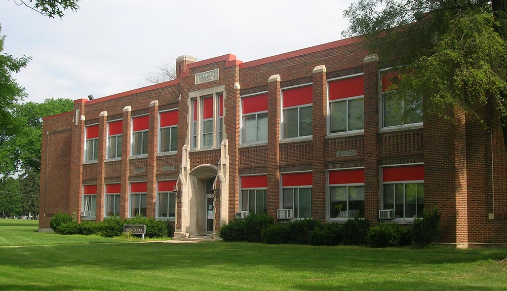
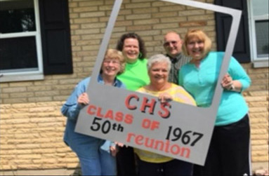

Students not pictured above:
Sandy Bates Hank Cunningham
Wiley Farler Janice Inman
Luther Johnson Faye Kirkpatrick
Timothy Shelton

1967
CARLISLE INDIANS
50 YEAR REUNION
- 6/9/17 @6:00PM
- Dinner and Dance -
Chautauqua Community Center
- 6/10/17 @6:00PM
- Carlisle Alumni Dinner -
Carlisle High School
- 6/11/17 @1:00PM
- Picnic at the Park -
Sycamore Trails Park
Class Motto: By Effort Comes Wisdom
Class Colors: Ice Blue & Silver
Class Flower: White Carnation

- Linda (Smith) Colvin - Chairperson
- Carrie (Adams) Million
- Donna (Cunningham) Kennard
- Karla (Smith) Allison
- Meredith Goldie
DEDICATION
In dedication to the classmates that we've lost over the years, below are the names along with the year passed in chronological
order:
-
1964 Lynn Roof
-
1973 Danny Lee Thorn
-
1980 John Ray Smith
-
1981 Earl Bolen
-
1984 Malcolm Hensley
-
1989 Harless Ray Fitzpatrick
-
1993 Jerry Lee Harrell
-
1997 Ronald Heitfield
-
1998 Ronald Dale Compton
-
2001 Ray Adams
-
2001 Charles E Lynch
-
2004 Mick Harmon Fancher
-
2005 Richard Anthony Wittenhagen
-
2008 Linda Darlene (Lucas) Pell
-
2010 Ina Fay (Deaton) Benton
-
2010 Shirley Ann (Sullivan) Croley
-
2010 Robert James Hess York
-
2012 Patricia Eileen (DeGroat) Rich
-
2013 Eli Monroe Crowe
-
2013 Joyce (Turner) Estep
-
2013 Linda Sue (Whisman) Chapel
-
2015 Lynda Rae (Gephart) Owens
-
2015 George W Haworth Jr.
-
2015 Patricia Ann (Pearson) Hazlett